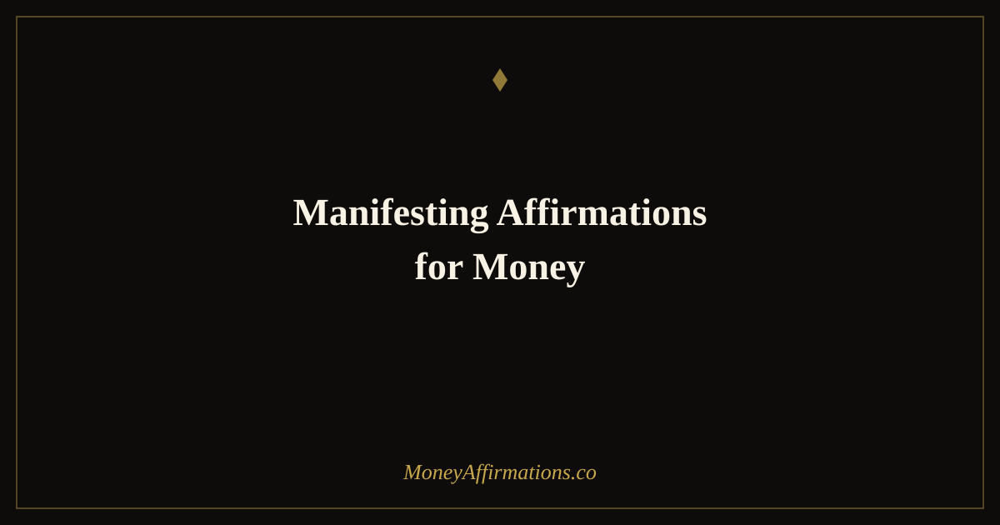

Manifesting Affirmations for Money: 25 Phrases for Abundance

Manifesting money is often misunderstood as wishing hard enough until life finally gives in. But the more grounded version is much more useful: you learn to focus your attention, regulate your emotions, open your mind to receiving, and take actions that match the financial reality you want to create. Manifesting affirmations for money help you practice that inner alignment before you move into the outer work.
When your thoughts are tangled in lack, it becomes harder to notice opportunities, ask for what you need, follow up, price your work, or make wise choices. When your inner state is calmer and more abundant, those same actions become easier. These affirmations are designed to help you shift from chasing money in fear to welcoming money with clarity, confidence, and steady participation. They are not a replacement for action. They are a way to make action feel more aligned, less desperate, and more sustainable.
What are manifesting affirmations for money?
Manifesting affirmations for money are present-tense statements that help you align your beliefs, emotions, and behavior with abundance. They usually focus on receiving, possibility, trust, worthiness, and inspired action. Instead of repeating anxious thoughts like "I never have enough" or "money is always hard," you give your mind a new pattern: money can flow, opportunities can appear, and you can become someone who receives and manages abundance well.
The best manifestation practice is not passive. It creates a bridge between inner belief and outer movement. If you affirm that money is coming to you, you also become more willing to send the invoice, make the offer, apply for the role, organize your finances, or follow through on the idea you keep postponing. For a deeper explanation of this energy-and-action balance, the guide to The Secret money affirmations is a natural companion to this page.
25 manifesting affirmations for money
- I am aligned with the energy of money, abundance, and receiving.
- Money flows to me through inspired action and open-hearted trust.
- I manifest financial opportunities that match my highest good.
- I am worthy of receiving more money than I have ever received before.
- My thoughts, emotions, and actions are aligned with prosperity.
- I welcome money in ways that feel peaceful, ethical, and abundant.
- The universe supports my financial expansion in visible and invisible ways.
- I am open to unexpected income, helpful ideas, and generous opportunities.
- Every day, I become more magnetic to wealth and financial ease.
- I release resistance and allow money to move toward me naturally.
- I trust my intuition to guide me toward aligned money decisions.
- My desires are safe, and my financial dreams are worthy of support.
- I manifest money by becoming available for abundance in every form.
- I notice signs, openings, and opportunities that lead to greater prosperity.
- Receiving money feels safe, joyful, and natural in my life.
- I am grateful for the wealth I have and the wealth already on its way.
- My inner world is abundant, and my outer world reflects that abundance.
- I take inspired action when money opportunities present themselves.
- I am allowed to receive money with ease, speed, and grace.
- Financial blessings come to me in perfect timing.
- I attract people, ideas, and situations that support my prosperity.
- I am becoming a clear channel for abundance, creativity, and wealth.
- Money supports my purpose, my peace, and my ability to give.
- I choose beliefs that make wealth feel possible and natural.
- I am ready to manifest more money and manage it with wisdom.
How to use these affirmations
Start by choosing five affirmations that feel alive to you. "Alive" does not always mean easy. Sometimes the best affirmation creates a little resistance because it touches the edge of what you are learning to believe. Say each statement slowly, then pause and imagine what your body would feel like if that affirmation were already becoming true. Would your shoulders soften? Would you breathe differently? Would you send the message you have been avoiding?
After repeating the affirmations, write down one inspired action. Keep it practical. Manifestation becomes stronger when your mind sees you behaving like the person you are affirming yourself to be. If you say, "I take inspired action when money opportunities present themselves," then your next step might be replying to a client, improving a sales page, applying for a better job, reviewing an offer, or setting aside time to develop a profitable idea.
You can also use these affirmations before visualization. Close your eyes for one minute and picture money arriving in a way that feels realistic enough to accept but expansive enough to stretch you. Imagine receiving it calmly. Imagine knowing what to do with it. Imagine letting it support your life without guilt. This kind of emotional rehearsal teaches your nervous system that more money does not have to mean more fear.
Manifesting money without forcing
One of the most common mistakes in manifestation is turning desire into pressure. You want money so badly that every affirmation becomes tense. Your body is saying the words, but underneath them it is bracing for disappointment. If that happens, soften the practice. Manifesting is not about gripping. It is about becoming available.
A helpful question is: "What would make receiving feel safer today?" Maybe you need to forgive yourself for a past money mistake. Maybe you need to look at your numbers with compassion. Maybe you need to stop checking for results every hour and take one grounded step instead. Manifestation works better when your nervous system is not being dragged along by fear.
This is where money affirmations and practical money care meet. You can believe in abundance and still make a budget. You can trust the universe and still follow up on an invoice. You can visualize wealth and still improve your skills. In fact, that combination is often the most powerful: open energy, clear mind, grounded action. If you want a more action-oriented receiving practice, the Money comes to me easily affirmations page is a strong next step.
A simple money manifestation routine
For a daily practice, keep the routine short enough that you will actually repeat it. Begin with one minute of breathing. Then say three to five affirmations slowly. After that, write one sentence of gratitude for money already present in your life and one sentence naming the money you are ready to receive. Finally, choose one aligned action for the day.
The action is what keeps the practice grounded. If you are manifesting more clients, send one message. If you are manifesting more stability, review one number. If you are manifesting more ease, remove one source of money friction. Over time, this rhythm teaches your mind that manifestation is not separate from your daily life. It is how you bring your daily life into alignment with the wealth you are calling in.
Tips to make them work faster
- Regulate before you affirm. Take a few slow breaths first. A calmer body receives new beliefs more easily.
- Pair desire with direction. After every affirmation session, choose one practical money action to complete.
- Track signs of movement. Write down opportunities, ideas, discounts, payments, helpful conversations, or mindset shifts.
- Use gratitude as proof. Gratitude for current money makes future money feel safer to receive.
- Keep the same set for 21 days. Repetition gives your subconscious time to accept a new financial identity.
Frequently Asked Questions
Do manifesting affirmations for money really work?
They can work as part of a larger practice because they change the beliefs and emotional patterns that influence action. They help you notice opportunities, ask more confidently, receive more easily, and make clearer decisions. They are most effective when paired with practical financial steps.
What is the best time to say money manifestation affirmations?
Morning is powerful because it sets your attention before the day begins. Bedtime is also useful because the mind is more receptive as you fall asleep. You can also use them immediately before money actions like sending invoices, budgeting, pitching, or checking your bank account.
How many affirmations should I use at once?
Three to five is enough for a focused practice. Too many can dilute your attention. Choose a small set that feels emotionally meaningful, repeat it daily, and let the words become familiar before switching to a new group.
What if I feel desperate while manifesting money?
Desperation is a sign to slow down and regulate your nervous system first. Try a gentler affirmation such as "I am open to one new solution today." Then take one practical step. Manifestation works better from steadiness than from panic.
For more support with abundance and attraction, explore the full manifestation affirmations collection. You may also like the law of attraction affirmations for money guide if you want to deepen the connection between mindset, energy, and financial receiving.